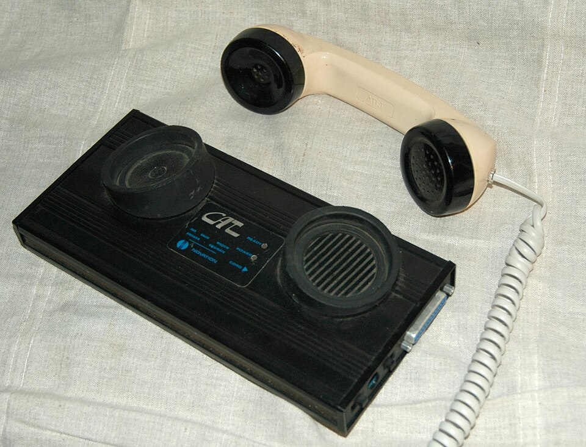
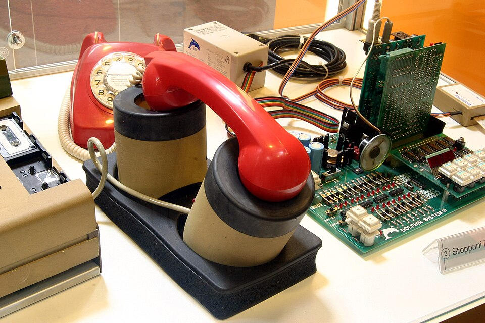
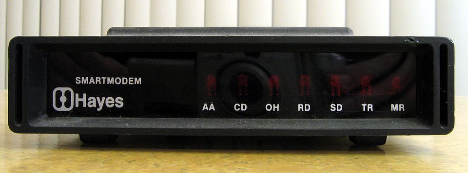
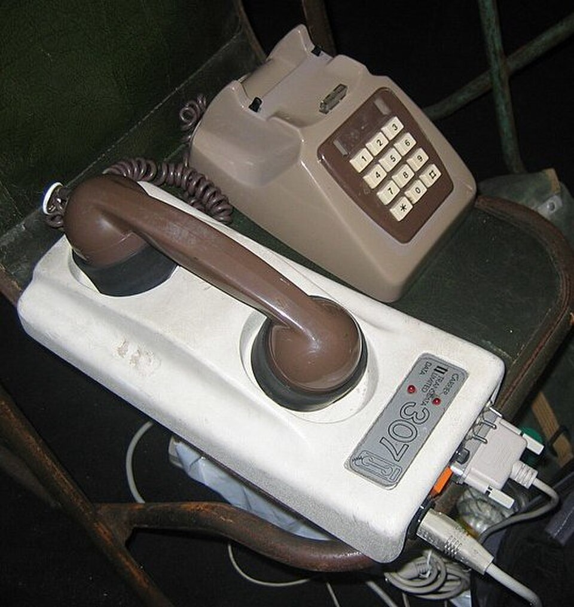
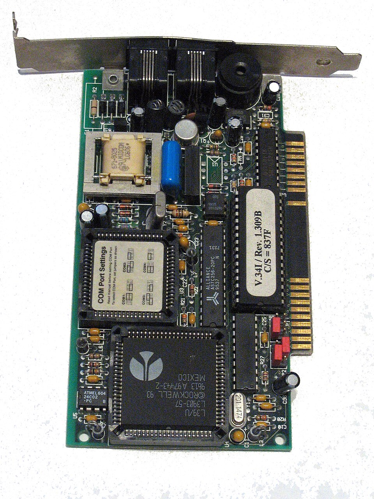
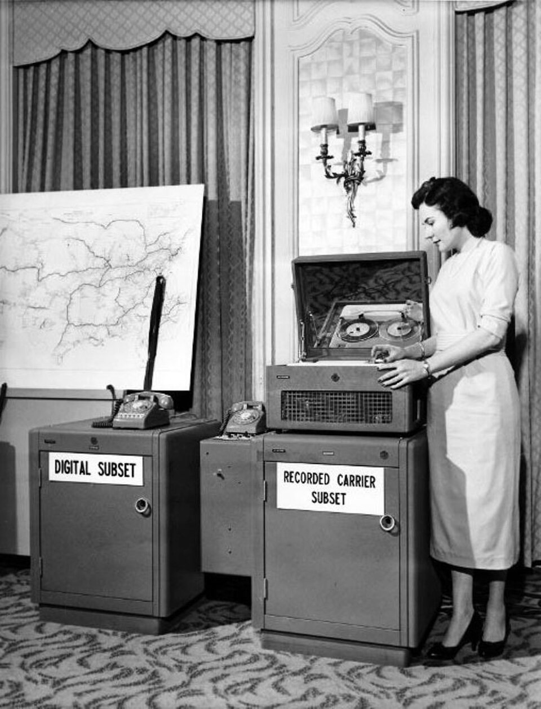
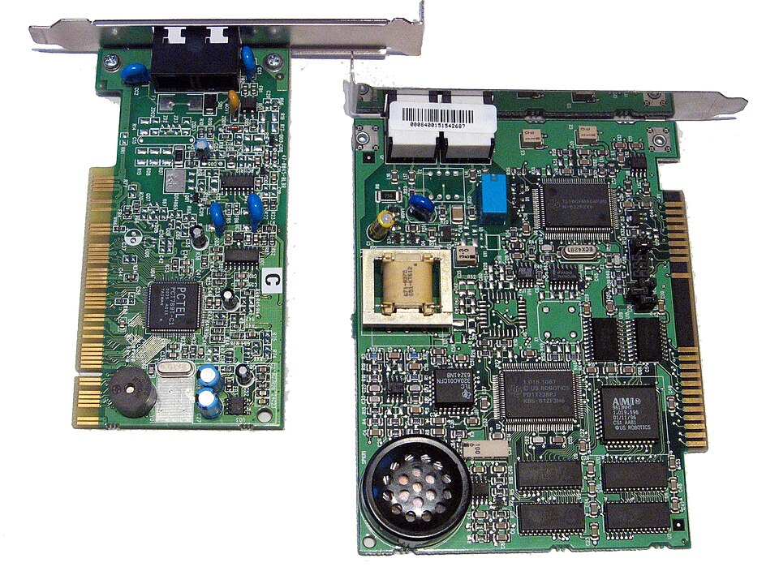
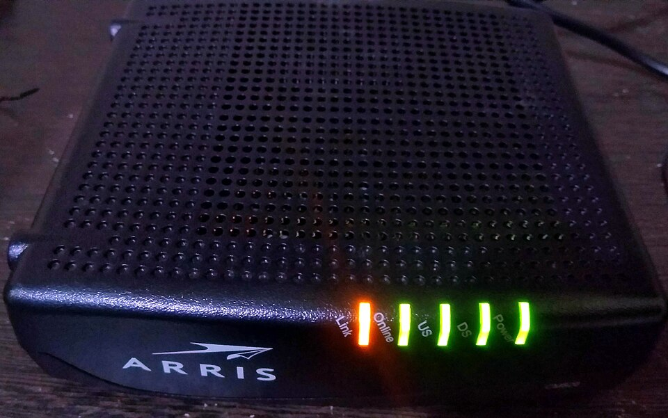

Hayes Microcomputer Products introduced the AT command set with the Smartmodem 300 in 1981. "AT" means "attention" — every command begins with it. The standard was so successful it became universal, used by virtually every dial-up modem ever made.
"Baud" (named for Émile Baudot) measures symbols per second. At low speeds, baud = bits per second. Above 2400 baud, multiple bits per symbol made bps > baud. The race from 300 to 56,000 bps took 25 years of relentless innovation.
The handshake sequence between two modems was a precise choreography of tones, each phase serving a technical purpose. Generation X and Millennials can identify it instantly.
Hardware that defined the dial-up era — acoustic couplers, internal ISA cards, external 56K boxes, and the modems that brought millions online.







